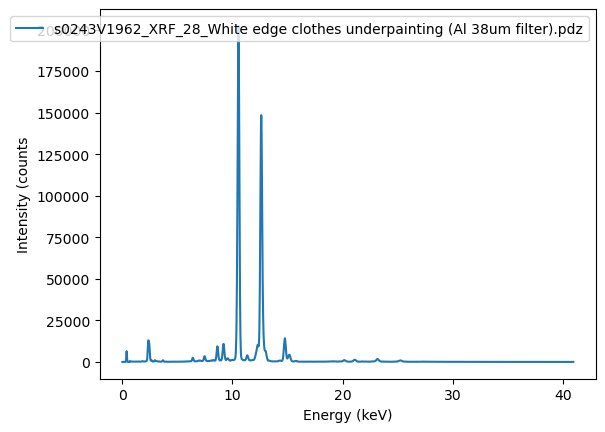

from read_pdz import file_to_bytesAbout parsing pdz files
Let’s bite off some bytes…
Bruker .pdz files are binary files that contain both XRF spectral data (i.e. photon counts) and metadata. There is no official description of the file format yet, so in order to decode the bytes we need to do some reverse engineering. This will get a rather complicated, so fasten your seat belts…
To get started we need to read the pdz file into memory as a numpy array of bytes using the file_to_bytes() function.
pdz_file = '/home/frank/Work/DATA/read-pdz-demodata/s0243V1962_XRF_28_White edge clothes underpainting (Al 38um filter).pdz'
pdz_bytes = file_to_bytes(pdz_file)
len(pdz_bytes)8690We see that this pdz file contains 8690 bytes. Let’s take a look at the first 6 bytes…
first_six_bytes = pdz_bytes[0:6]
first_six_bytesarray([b'\x19', b'', b'\x0e', b'', b'', b''], dtype='|S1')The standard Python library for decoding bytes is struct. In order to decode a sequence of bytes you can use the struct.unpack() function. As a first argument you need to supply a so-called format string. This is essentially a recipe that explains which bytes belong together and how to interpret the byte values of each group.
We happen to know that the byte order in pdz files is Little-Endian. This is indicated with the '<' character. Next thing we know is that the first two bytes belong together and represent a ‘short’ integer value. This is indicated with the character 'h'. The next group of four bytes represents an integer. This is indicated with the character 'i'. For more detail on format characters see: format-characters.
Armed with our format string '<hi' we are now ready to decode our first six bytes:
import structstruct.unpack('<hi', first_six_bytes)(25, 14)Unfortunately the standard struct.unpack() function is not sufficient to decode pdz files. The reason for this is that Bruker pdz files contain different types of variable byte length segments that require more advanced decoding. An example of such a contraption is a variable length character string. The first four bytes of such a segment contain an integer value that represents the number of two byte characters following that belong to that string. Parsing such a string is then a two-step process. First read the size n of the string, and then read 2n bytes that contain the actual string characters. Another example of a variable byte length construct is the division of a pdz file into blocks. Here again we need to read an integer value to decide how many following bytes belong the block. So far we have discovered three types of variable byte length constructs that are being used in pdz files: file blocks, strings and tables.
An essential a first step in parsing a pdz file is a separation into it’s consecutive file blocks. This can be done by applying the get_blocks() function to the pdz_bytes array.
from read_pdz import get_blocksblock_list = get_blocks(pdz_bytes)Detecting block sequence...
Ok!Let’s take a look at our block_list variable. Note that for long arrays not all values are printed…
block_list[{'block_type': 25,
'block_size': 14,
'start': 0,
'stop': 20,
'file_size': 8690,
'bytes': array([b'\x19', b'', b'\x0e', b'', b'', b'', b'p', b'', b'd', b'', b'z',
b'', b'2', b'', b'5', b'', b'\x01', b'', b'', b''], dtype='|S1')},
{'block_type': 1,
'block_size': 228,
'start': 20,
'stop': 254,
'file_size': 8690,
'bytes': array([b'\x01', b'', b'\xe4', b'', b'', b'', b'\x08', b'', b'', b'', b'9',
b'', b'0', b'', b'0', b'', b'F', b'', b'4', b'', b'9', b'', b'6',
b'', b'9', b'', b'\x08', b'', b'', b'', b'S', b'', b'K', b'', b'5',
b'', b'-', b'', b'4', b'', b'9', b'', b'6', b'', b'9', b'', b'-',
b'-', b'-', b'A', b'}', b'', b'\x06', b'', b'', b'', b'A', b'',
b'm', b'', b'p', b'', b't', b'', b'e', b'', b'k', b'', b'\x04',
b'', b'', b'', b'R', b'', b'x', b'', b'B', b'', b'x', b'', b'\x03',
b'\x08', b'\x07', b'', b'', b'', b'M', b'', b'o', b'', b'v', b'',
b'a', b'', b'b', b'', b'l', b'', b'e', b'', b'\x08', b'', b'', b'',
b'\x01', b'', b'\t', b'', b'', b'', b'8', b'', b'.', b'', b'0',
b'', b'.', b'', b'0', b'', b'.', b'', b'4', b'', b'4', b'', b'6',
b'', b'\x02', b'', b'\x06', b'', b'', b'', b'2', b'', b'0', b'',
b'0', b'', b'.', b'', b'3', b'', b'9', b'', b'\x03', b'', b'\x04',
b'', b'', b'', b'6', b'', b'.', b'', b'0', b'', b'3', b'', b'\x04',
b'', b'\x04', b'', b'', b'', b'3', b'', b'.', b'', b'0', b'', b'3',
b'', b'\x05', b'', b'\x04', b'', b'', b'', b'9', b'', b'.', b'',
b'2', b'', b'F', b'', b'\x06', b'', b'\x06', b'', b'', b'', b'2',
b'', b'0', b'', b'0', b'', b'.', b'', b'3', b'', b'9', b'',
b'\x07', b'', b'\x04', b'', b'', b'', b'1', b'', b'.', b'', b'1',
b'', b'1', b'', b'\x08', b'', b'\x04', b'', b'', b'', b'1', b'',
b'.', b'', b'0', b'', b'1', b''], dtype='|S1')},
{'block_type': 2,
'block_size': 92,
'start': 254,
'stop': 352,
'file_size': 8690,
'bytes': array([b'\x02', b'', b'\\', b'', b'', b'', b'\x01', b'', b'', b'',
b'\xaa', b'4', b'|', b'', b'\x16', b'\xee', b'K', b'', b'', b'',
b'', b'', b'', b'', b'', b'', b'x', b'\x94', b']', b'B', b'\xe4',
b'%', b']', b'B', b'\xd8', b'\xa3', b'\x86', b'A', b'\xd3',
b'\xcc', b'^', b'A', b'\x8a', b'A', b'\xc4', b'A', b'{', b'\x8e',
b'\xe1', b'B', b'\x05', b'', b'', b'', b'A', b'', b'r', b'', b't',
b'', b'a', b'', b'x', b'', b'\t', b'', b'', b'', b'8', b'', b'.',
b'', b'0', b'', b'.', b'', b'0', b'', b'.', b'', b'4', b'', b'4',
b'', b'6', b'', b'\x04', b'', b'', b'', b't', b'', b'e', b'', b's',
b'', b't', b''], dtype='|S1')},
{'block_type': 3,
'block_size': 8332,
'start': 352,
'stop': 8690,
'file_size': 8690,
'bytes': array([b'\x03', b'', b'\x8c', ..., b'', b'', b''], dtype='|S1')}]The example pdz file here contains exactly four consecutive blocks of bytes. Within each block the first two bytes of contain a (short) integer value that indicates the type of block, while the second four bytes contain an integer value that describes the length of that block. The first two bytes of the first block contain an integer value 25. This indicates that the pdz format is 25. The next blocks are of type 1, 2 and 3. Block types 1 and 2 contain various instrument metadata, while block type 3 contains the actual spectral data. According to our local XRF guru Luc Megens a pdz file can contain multiple XRF spectra in separate type 3 blocks. Furthermore pdz files can contain type 4, 5 and 6 blocks. For now we will ignore these…
To enable the parsing of variable length strings and tables I created an extended format string syntax that besides standard struct format characters includes a capital 'S' and 'T' for strings and tables, and 'X' for skipping bytes. Both 'S' and 'X' can be prefixed with and integer multiplier that indicates how many strings and bytes need to be parsed. For example 3X will skip 3 bytes. If you need to skip an unknown amount of bytes at the end of an array you can put a wildcard *X multiplier at the end of the xformat string. These additional characters need to be separated from standard struct format strings with dashes '-'. Another important extension of the syntax is 'Z'. This indicates at which position the actual spectral data of 2048 photon counts should be read.
To read the information that is hidden in the bytes array of a block we can now apply the function multiparse(). This function needs as required arguments an extended syntax format string xformat and an array of bytes arr. The xformat string functions as a recipe to decode the bytes array. The xformat strings for decoding block types 25, 1, 2 and 3 are stored in the PDZ_25_STRUCTURE_DICT dictionary. Also included for each block is a param_keys list with our interpretation of the parsed values based on a comparison with other exports from Bruker software. In cases where we could not find out we put question marks.
from read_pdz import multiparse, PDZ_25_STRUCTURE_DICTBefore parsing the bytes from the file blocks it is informative to take look at the PDZ_25_STRUCTURE_DICT dictionary. This provides a complete specification of the pdz file format.
PDZ_25_STRUCTURE_DICT = {
25: {'xformat': 'hi-10X-i',
'param_keys': ['pdz_type', 'block_size', 'FileFormatString?', '??']},
1: {'xformat': 'hi-2S-6X-2S-h-S-T',
'param_keys': ['block_type', 'block_size', '??', 'SerialString', '??', '??', '??', '??', '??', '??',
'??', '??', '??', '??', '??', '??', '??']},
2: {'xformat': 'hi3i8f-*X',
'param_keys': ['block_type', 'block_size', '??', 'RawCounts', 'ValidCounts', '??', '??',
'??', 'ActiveTimeInSeconds', 'DeadTimeInSeconds', 'ResetTimeInSeconds',
'LiveTimeInSeconds', 'TotalElapsedTimeInSeconds', '??', '??', '??']},
3: {'xformat': 'hi-3i9f7hfhfhfhf8hfhi-S-h-Z',
'param_keys': ['block_type', 'block_size', '??', 'RawCounts', 'ValidCounts',
'??', '??', '??', 'ActiveTimeInSeconds', 'DeadTimeInSeconds',
'ResetTimeInSeconds', 'LiveTimeInSeconds', 'XrayVoltageInkV', 'XrayFilamentCurrentInMicroAmps',
'Filter1ElementAtomicNum', 'Filter1Thickness', 'Filter2ElementAtomicNum', 'Filter2Thickness',
'Filter3ElementAtomicNum', 'Filter3Thickness', '??', 'DetectorTempInC', '??',
'??', '??', 'eVPerChannel', '??', 'eVStart',
'Year', 'Month', 'AM/PM code?', 'Day', 'Hour', 'Minutes', 'Seconds',
'??', 'NosePressureInMilliBars', 'NumberOfChannels', 'NoseTemperatureInC',
'TubeSpec?', '??', '2048 counts']}}With this pdz file format specification we can decode the four blocks in the pdz file one by one. Let’s parse the bytes of first block (type 25) of the pdz file with the corresponding xformat string and param_keys list.
xformat = PDZ_25_STRUCTURE_DICT[25]['xformat']
param_keys = PDZ_25_STRUCTURE_DICT[25]['param_keys']
xformat, param_keys('hi-10X-i', ['pdz_type', 'block_size', 'FileFormatString?', '??'])The recipe for reading this first file block is quite short: h: read a two byte integer, i: read a four byte integer, 10X: skip ten bytes, i: read another four byte integer.
b0 = block_list[0]['bytes']
multiparse(xformat, b0);| values | |
|---|---|
| 0 | 25 |
| 1 | 14 |
| 2 | b'pdz25' |
| 3 | 1 |
The multiparse() function can be given an optional third argument that is a list with the interpretation of each value.
multiparse(xformat, b0, param_keys=param_keys);| values | param_keys | |
|---|---|---|
| 0 | 25 | pdz_type |
| 1 | 14 | block_size |
| 2 | b'pdz25' | FileFormatString? |
| 3 | 1 | ?? |
Next we read the second block…
b1 = block_list[1]['bytes']
xformat = PDZ_25_STRUCTURE_DICT[1]['xformat']
param_keys = PDZ_25_STRUCTURE_DICT[1]['param_keys']
xformat'hi-2S-6s-2S-h-S-T'multiparse(xformat, b1, param_keys=param_keys);| values | param_keys | |
|---|---|---|
| 0 | 1 | block_type |
| 1 | 228 | block_size |
| 2 | 900F4969 | ?? |
| 3 | SK5-4969 | SerialString |
| 4 | b'---A}\x00' | ?? |
| 5 | Amptek | ?? |
| 6 | RxBx | ?? |
| 7 | 2051 | ?? |
| 8 | Movable | ?? |
| 9 | [#1, 8.0.0.446] | ?? |
| 10 | [#2, 200.39] | ?? |
| 11 | [#3, 6.03] | ?? |
| 12 | [#4, 3.03] | ?? |
| 13 | [#5, 9.2F] | ?? |
| 14 | [#6, 200.39] | ?? |
| 15 | [#7, 1.11] | ?? |
| 16 | [#8, 1.01] | ?? |
This file block (type 1) contains values that seem to indicate serial numbers and probably software versions. Not sure how useful this information is for us. Let’s read the next block.
b2 = block_list[2]['bytes']
xformat = PDZ_25_STRUCTURE_DICT[2]['xformat']
param_keys = PDZ_25_STRUCTURE_DICT[2]['param_keys']
xformat'hi3i8f-*X'multiparse(xformat, b2, param_keys=param_keys);| values | param_keys | |
|---|---|---|
| 0 | 2 | block_type |
| 1 | 92 | block_size |
| 2 | 1 | ?? |
| 3 | 8139946 | RawCounts |
| 4 | 4976150 | ValidCounts |
| 5 | 0.0 | ?? |
| 6 | 0.0 | ?? |
| 7 | 55.394989 | ?? |
| 8 | 55.287003 | ActiveTimeInSeconds |
| 9 | 16.830002 | DeadTimeInSeconds |
| 10 | 13.925006 | ResetTimeInSeconds |
| 11 | 24.532001 | LiveTimeInSeconds |
| 12 | 112.778282 | TotalElapsedTimeInSeconds |
| 13 | b'\x05Artax\t8.0.0.446\x04test' | ?? |
File block 2 primarily contains instrumental data about measurement times and detector counts.
Finally we parse file block type 3. This block contains two parts. The first part contains spectral parameters, while the second part contains the actual spectral data (i.e. photon counts consisting of 2048 four byte integers.
b3 = block_list[3]['bytes']
b3_part1 = b3[0:-2054] # spectral parameters
b3_part2 = b3[-2054:] # counts
xformat = PDZ_25_STRUCTURE_DICT[3]['xformat']
param_keys = PDZ_25_STRUCTURE_DICT[3]['param_keys']
xformat'hi-3i9f7hfhfhfhf8hfhi-*Z'values, arr = multiparse(xformat, b3, param_keys=param_keys)| values | param_keys | |
|---|---|---|
| 0 | 3 | block_type |
| 1 | 8332 | block_size |
| 2 | 0 | ?? |
| 3 | 8139946 | RawCounts |
| 4 | 4976150 | ValidCounts |
| 5 | 0.0 | ?? |
| 6 | 0.0 | ?? |
| 7 | 55.394989 | ?? |
| 8 | 55.287003 | ActiveTimeInSeconds |
| 9 | 16.830002 | DeadTimeInSeconds |
| 10 | 13.925006 | ResetTimeInSeconds |
| 11 | 24.532001 | LiveTimeInSeconds |
| 12 | 40.0 | XrayVoltageInkV |
| 13 | 8.0 | XrayFilamentCurrentInMicroAmps |
| 14 | 13 | Filter1ElementAtomicNum |
| 15 | 38 | Filter1Thickness |
| 16 | 0 | Filter2ElementAtomicNum |
| 17 | 0 | Filter2Thickness |
| 18 | 0 | Filter3ElementAtomicNum |
| 19 | 0 | Filter3Thickness |
| 20 | 5 | ?? |
| 21 | 37.5 | DetectorTempInC |
| 22 | 0 | ?? |
| 23 | 0.0 | ?? |
| 24 | 0 | ?? |
| 25 | 20.0 | eVPerChannel |
| 26 | 2 | ?? |
| 27 | 2.356571 | eVStart |
| 28 | 2022 | Year |
| 29 | 8 | Month |
| 30 | 2 | AM/PM code? |
| 31 | 23 | Day |
| 32 | 11 | Hour |
| 33 | 54 | Minutes |
| 34 | 32 | Seconds |
| 35 | 320 | ?? |
| 36 | 1017.0 | NosePressureInMilliBars |
| 37 | 2048 | NumberOfChannels |
| 38 | 38 | NoseTemperatureInC |
| 39 | [b'\x0cRoHS 50 Hi-Z\x01'] | ?? |
| 40 | [0, 0, 0, 0, 0, 0, 0, 0, 0, 0, 0, 0, 0, 0, 6, ... | Intensity_2048_channels |
We can see in the table above that the last row contains an array of 2048 integers with photon counts. This array can accessed by indexing the last element of the returned values list like so:
values[-1]array([0, 0, 0, ..., 2, 2, 3])The energy calibration for the individual 2048 detector channels is not stored in the pdz file but can be calculated from two spectral parameters: eVPerChannel and eVStart. This is done automatically for you in the extract_spectra() function as explained in the previous section. If you want to save the spectral data to a .csv file then set the option to_csv=True.
from read_pdz import extract_spectrumdf = extract_spectrum(pdz_file, to_csv=True)Saving spectral data to: /home/frank/Work/DATA/read-pdz-demodata/s0243V1962_XRF_28_White edge clothes underpainting (Al 38um filter).pdz.csvax = df.plot()
ax.set_xlabel('Energy (keV)')
ax.set_ylabel('Intensity (counts');
FUNCTIONS
get_blocktypes
get_blocktypes (block_list)
Extract block_types list from block_list.
get_blocks
get_blocks (pdz_bytes, verbose=True)
Parse pdz_byte_array into consequtive blocks.
get_block_at
get_block_at (pdz_arr, start)
*Read first data block from bytes array pdz_arr from index position start.
Assumes that first 4 bytes are (block type and size)
Returns: block_dict, block*
read_counts
read_counts (xformat, arr, verbose=True)
Extract counts.
read_table
read_table (xformat, arr, verbose=True)
Extract numbered table
skip_bytes
skip_bytes (xformat, arr, verbose=True)
*Skip a number of bytes as specified in xformat string.
If multiplier is * then skip all.*
read_strings
read_strings (xformat, arr, verbose=True)
Parse n variable length character strings preceded by a length integer.
parse
parse (format, arr, verbose=True)
*Parse first bytes from bytes array arr into human readable text according to format string.
See struct library for format string specification. For example, ‘<ff’ would result the first 8 bytes to be converted into two Little-Endian floats.
Returns: parsed list and remaining bytes array of tail_arr unprocessed values.*
file_to_bytes
file_to_bytes (pdz_file)
*Read all bytes from filepath pdz_file into a byte array.
Returns: pdz_arr (numpy array of bytes)*
prefix
prefix (format)
Prefix little endian byte order (<) to struct type format string if missing.
multiparse
multiparse (xformat, arr, param_keys=None, verbose=True)
Parse segments in extendend format string xformat e.g. ‘<i5f-2S-T-3S-S-f’